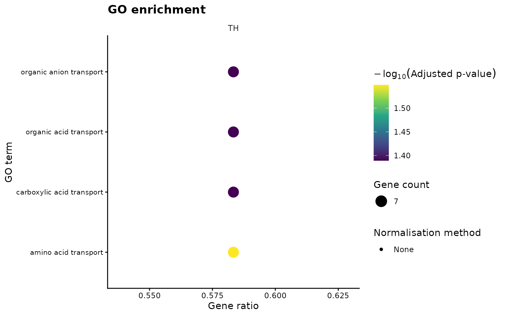
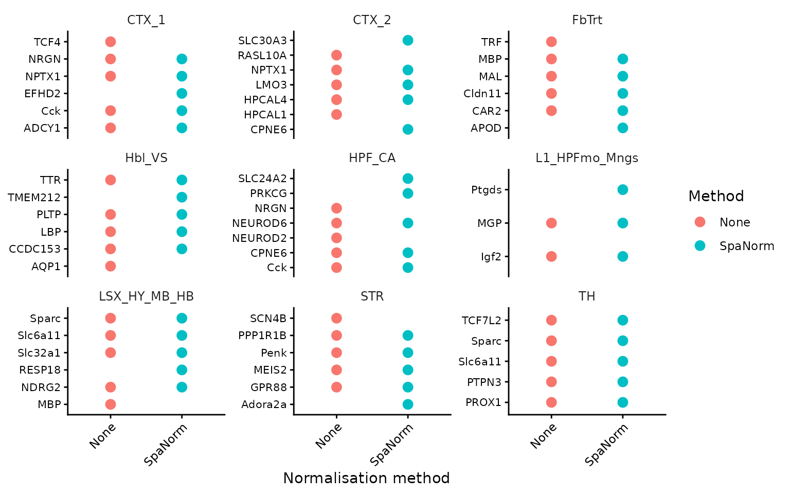
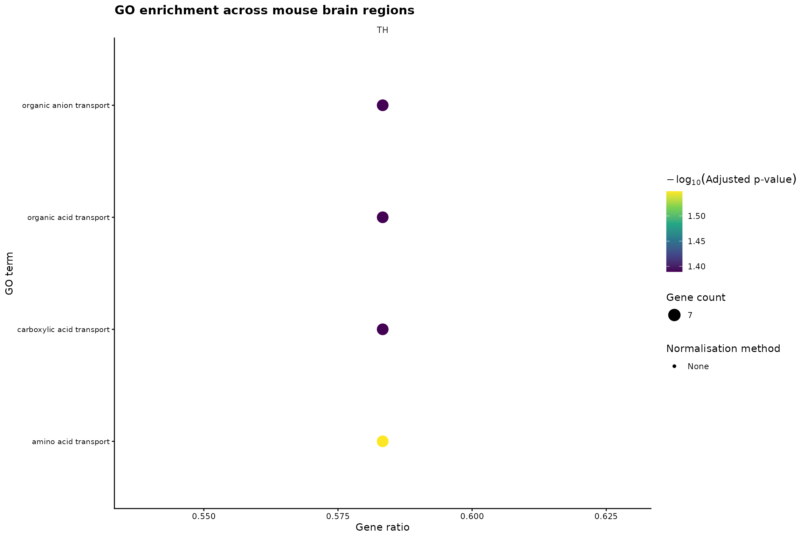
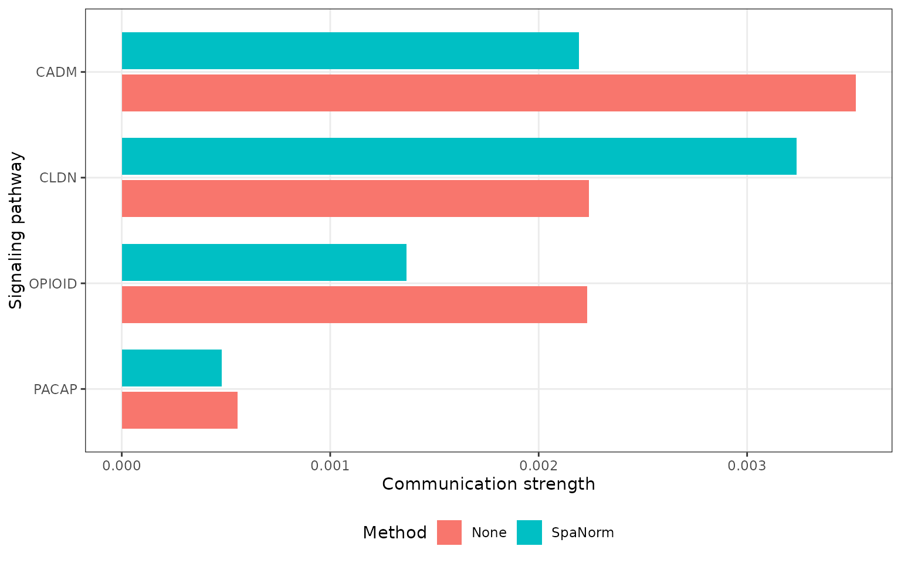
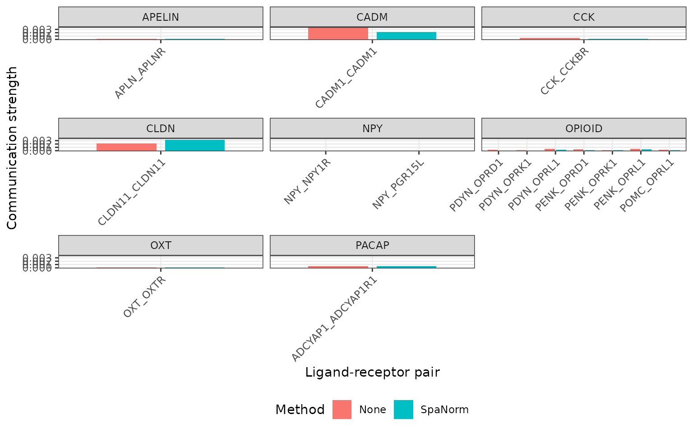
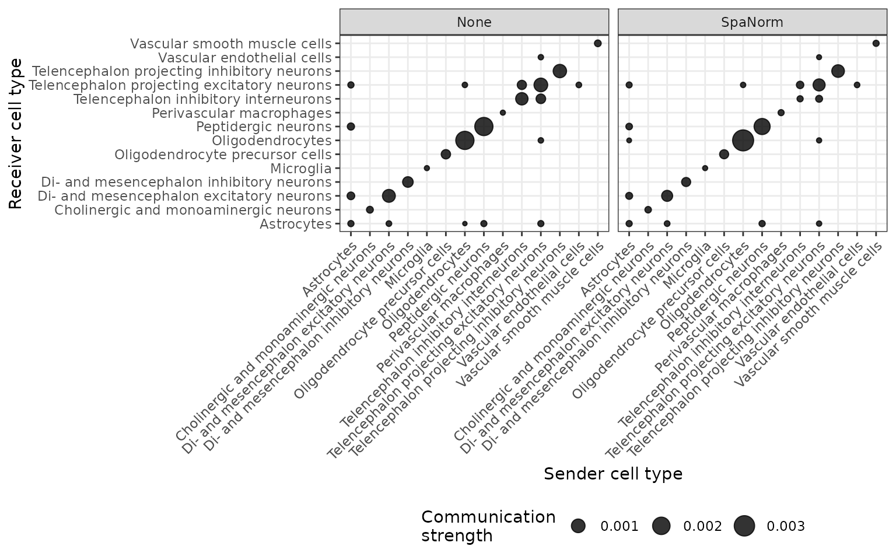
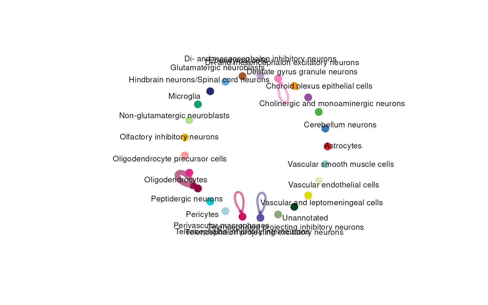
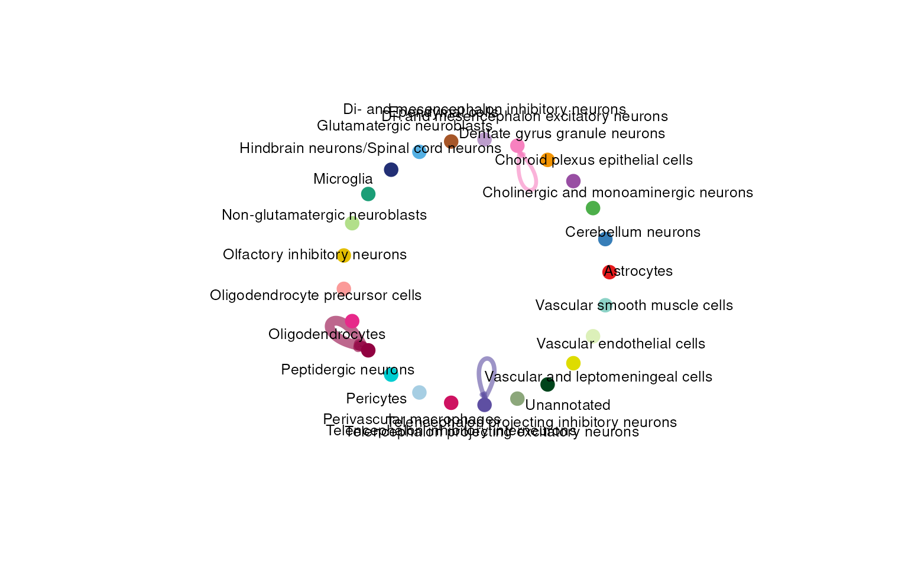

Biological interpretation and cell-cell communication with STBench
Source:vignettes/biological-interpretation.Rmd
biological-interpretation.RmdIntroduction
We identify genes associated with annotated cell types and perform
Gene Ontology (GO) Biological Process enrichment using the mouse
annotation database org.Mm.eg.db. The example dataset is
small, and statistical significance or detectable signalling cannot be
guaranteed.
Differential expression and GO enrichment
The region-specific differential-expression analysis uses a configurable test, including an FDR cutoff of 0.05.
go_result <- calculate_go(
norm_list = norm,
cluster_col = "Main_molecular_tissue_region",
methods = names(norm),
assay_name = "logcounts",
OrgDb = org.Mm.eg.db::org.Mm.eg.db,
key_type = "SYMBOL",
ont = "BP",
fdr_cutoff = 0.05,
min_prop = 0.5,
min_spots = 10,
min_genes = 5,
pvalue_cutoff = 0.05,
qvalue_cutoff = 0.05,
p_adjust_method = "BH",
readable = TRUE,
test_type = "t"
)
names(go_result)
#> [1] "markers" "genes" "go" "universe"
head(go_result$genes)
#> method cluster gene FDR rank
#> 1 None CTX_1 NRGN 7.004472e-12 1
#> 2 None CTX_1 NPTX1 2.393713e-10 2
#> 3 None CTX_1 TCF4 6.065665e-07 3
#> 4 None CTX_1 Cck 1.081228e-06 4
#> 5 None CTX_1 ADCY1 2.003602e-06 5
#> 6 None CTX_1 EFHD2 1.898462e-05 6
head(go_result$go)
#> ID Description GeneRatio BgRatio RichFactor
#> 1 GO:0006865 amino acid transport 7/12 32/304 0.2187500
#> 2 GO:0015711 organic anion transport 7/12 41/304 0.1707317
#> 3 GO:0015849 organic acid transport 7/12 41/304 0.1707317
#> 4 GO:0046942 carboxylic acid transport 7/12 41/304 0.1707317
#> FoldEnrichment oddsRatio zScore pvalue p.adjust qvalue
#> 1 5.541667 14.95200 5.497007 4.089204e-05 0.02825640 0.01254332
#> 2 4.325203 10.62353 4.632898 2.362358e-04 0.04080973 0.01811588
#> 3 4.325203 10.62353 4.632898 2.362358e-04 0.04080973 0.01811588
#> 4 4.325203 10.62353 4.632898 2.362358e-04 0.04080973 0.01811588
#> geneID Count SetSize DESize UniverseSize
#> 1 Slc6a11/Slc17a6/Cck/Grm1/Hrh3/Grm2/Agt 7 32 12 304
#> 2 Slc6a11/Slc17a6/Cck/Grm1/Hrh3/Grm2/Agt 7 41 12 304
#> 3 Slc6a11/Slc17a6/Cck/Grm1/Hrh3/Grm2/Agt 7 41 12 304
#> 4 Slc6a11/Slc17a6/Cck/Grm1/Hrh3/Grm2/Agt 7 41 12 304
#> method cluster GeneRatio_numeric log10_padj
#> 1 None TH 0.5833333 1.548883
#> 2 None TH 0.5833333 1.389236
#> 3 None TH 0.5833333 1.389236
#> 4 None TH 0.5833333 1.389236Visualise enriched biological processes
For each region and normalisation method, we visualise the five most
significant GO terms. The top_n argument controls the
displayed terms; the original enrichment results remain available in
go_result.
if (nrow(go_result$go) > 0L) {
p_go <- plot_go(
go_result = go_result,
top_n = 5,
method_col = "method",
cluster_col = "cluster",
point_size_range = c(2, 7),
theme_name = "classic",
title = "GO enrichment",
ncol = 2
)
print(p_go$plot)
} else {
message("No significant GO terms were detected in the example data.")
}
Visualise differential-expression genes
These plots display significant DE genes used as input to GO enrichment, even when no GO terms reach significance.
if (nrow(go_result$genes) > 0L) {
p_go_genes <- plot_go_genes(
go_result = go_result,
top_n = 5,
method_col = "method",
cluster_col = "cluster",
gene_col = "gene",
point_size = 3,
theme_name = "classic"
)
print(p_go_genes$plot)
} else {
message("No significant DE genes were detected in the example data.")
}
Visualise GO enrichment results
We visualise the five most significant GO Biological Process terms for each cell type and normalisation method. Point size represents the number of genes associated with each GO term, while colour represents the adjusted p-value.
if (nrow(go_result$go) > 0L) {
p_go <- plot_go(
go_result = go_result,
top_n = 5,
method_col = "method",
cluster_col = "cluster",
method_order = NULL,
point_size_range = c(2, 7),
theme_name = "classic",
methods = NULL,
title = "GO enrichment across mouse brain regions",
subtitle = NULL,#"Comparison across normalisation methods",
ncol = 3
)
p_go$plot
}
Cell-cell communication analysis
CellChat is applied independently to each normalised dataset using the same analysis parameters. This allows us to investigate variation in inferred communication patterns across normalisation methods.
Prepare data for CellChat
For the mouse example data, we use the mouse CellChat database. Spatial scaling factors and interaction distances must be validated for the coordinate units and spatial technology. The values below are illustrative.
data("CellChatDB.mouse", package = "CellChat")
ccc_database <- CellChat::CellChatDB.mouse
ccc_spe <- norm
celltype_col <- "cell_type"
spatial_factors <- data.frame(ratio = 0.5, tol = 12.5)
interaction_range <- 250
contact_range <- 25Run CellChat across normalisation methods
This workflow requires CellChat and sufficient ligand-receptor genes. An error is informative if the small example contains too few supported interactions.
ccc_results <- run_ccc(
spelist = ccc_spe,
celltype_col = celltype_col,
database = ccc_database,
spatial_factors = spatial_factors,
interaction_range = interaction_range,
contact_range = contact_range,
assay_name = "logcounts",
nboot = 10,
min_cells = 5,
trim = 0.1,
scale_distance = 0.1,
variable_both = FALSE,
verbose = FALSE
)
#> [1] "Create a CellChat object from a data matrix"
#> Create a CellChat object from spatial transcriptomics data...
#> Set cell identities for the new CellChat object
#> The cell groups used for CellChat analysis are Astrocytes, Cerebellum neurons, Cholinergic and monoaminergic neurons, Choroid plexus epithelial cells, Dentate gyrus granule neurons, Di- and mesencephalon excitatory neurons, Di- and mesencephalon inhibitory neurons, Ependymal cells, Glutamatergic neuroblasts, Hindbrain neurons/Spinal cord neurons, Microglia, Non-glutamatergic neuroblasts, Olfactory inhibitory neurons, Oligodendrocyte precursor cells, Oligodendrocytes, Peptidergic neurons, Pericytes, Perivascular macrophages, Telencephalon inhibitory interneurons, Telencephalon projecting excitatory neurons, Telencephalon projecting inhibitory neurons, Unannotated, Vascular and leptomeningeal cells, Vascular endothelial cells, Vascular smooth muscle cells
#> The number of highly variable ligand-receptor pairs used for signaling inference is 94
#> truncatedMean is used for calculating the average gene expression per cell group.
#> [1] ">>> Run CellChat on spatial transcriptomics data using distances as constraints of the computed communication probability <<< [2026-11-21 21:26:16.678032]"
#> The input L-R pairs have both secreted signaling and contact-dependent signaling. Run CellChat in a contact-dependent manner for `Cell-Cell Contact` signaling, and in a diffusion manner based on the `interaction.range` for other L-R pairs.
#> [1] ">>> CellChat inference is done. Parameter values are stored in `object@options$parameter` <<< [2026-11-21 21:26:19.217792]"
#> The cell-cell communication related with the following cell groups are excluded due to the few number of cells: Cerebellum neurons, Dentate gyrus granule neurons, Glutamatergic neuroblasts, Non-glutamatergic neuroblasts, Olfactory inhibitory neurons ! 5.2% interactions are removed!
#> [1] "Create a CellChat object from a data matrix"
#> Create a CellChat object from spatial transcriptomics data...
#> Set cell identities for the new CellChat object
#> The cell groups used for CellChat analysis are Astrocytes, Cerebellum neurons, Cholinergic and monoaminergic neurons, Choroid plexus epithelial cells, Dentate gyrus granule neurons, Di- and mesencephalon excitatory neurons, Di- and mesencephalon inhibitory neurons, Ependymal cells, Glutamatergic neuroblasts, Hindbrain neurons/Spinal cord neurons, Microglia, Non-glutamatergic neuroblasts, Olfactory inhibitory neurons, Oligodendrocyte precursor cells, Oligodendrocytes, Peptidergic neurons, Pericytes, Perivascular macrophages, Telencephalon inhibitory interneurons, Telencephalon projecting excitatory neurons, Telencephalon projecting inhibitory neurons, Unannotated, Vascular and leptomeningeal cells, Vascular endothelial cells, Vascular smooth muscle cells
#> The number of highly variable ligand-receptor pairs used for signaling inference is 93
#> truncatedMean is used for calculating the average gene expression per cell group.
#> [1] ">>> Run CellChat on spatial transcriptomics data using distances as constraints of the computed communication probability <<< [2026-11-21 21:26:23.513106]"
#> The input L-R pairs have both secreted signaling and contact-dependent signaling. Run CellChat in a contact-dependent manner for `Cell-Cell Contact` signaling, and in a diffusion manner based on the `interaction.range` for other L-R pairs.
#> [1] ">>> CellChat inference is done. Parameter values are stored in `object@options$parameter` <<< [2026-11-21 21:26:25.890865]"
#> The cell-cell communication related with the following cell groups are excluded due to the few number of cells: Cerebellum neurons, Dentate gyrus granule neurons, Glutamatergic neuroblasts, Non-glutamatergic neuroblasts, Olfactory inhibitory neurons ! 7.8% interactions are removed!Compare signalling pathway strengths
Pathway strengths are summarised using communication probabilities returned by CellChat.
p_ccc_pathways <- plot_ccc_pathways(
ccc_result = ccc_results,
top_n = 4,
method_order = names(ccc_results),
log_scale = FALSE
)
p_ccc_pathways
Compare ligand-receptor interactions
This comparison examines differences in individual inferred interactions and their associated signalling pathways.
p_ccc_lr <- plot_ccc_lr(
ccc_result = ccc_results,
top_n = 15,
method_order = names(ccc_results),
log_scale = FALSE
)
p_ccc_lr
Compare sender-receiver communication
Communication between sender and receiver cell-type groups is summarised for each normalisation method.
p_ccc_sender_receiver <- plot_ccc_sender_receiver(
ccc_result = ccc_results,
methods = names(ccc_results),
method_order = names(ccc_results)
)
p_ccc_sender_receiver
Visualise pathway-specific communication networks
The following code visualises a detected signalling pathway using CellChat’s circle layout.
detected_pathways <- unique(unlist(lapply(
ccc_results,
function(x) x$cellchat@netP$pathways
)))
if (length(detected_pathways) > 0L) {
pathway <- detected_pathways[1]
for (method in names(ccc_results)) {
cellchat <- ccc_results[[method]]$cellchat
if (!is.null(cellchat) && pathway %in% cellchat@netP$pathways) {
CellChat::netVisual_aggregate(
cellchat,
signaling = pathway,
layout = "circle"
)
}
}
}

Summary
These analyses provide a framework for evaluating the sensitivity of inferred cell-cell communication patterns to different normalisation methods.
The comparisons describe differences in computationally inferred communication and should not be interpreted as direct evidence of biological signalling changes.
Session information
sessionInfo()
#> R version 4.6.2 (2026-10-29)
#> Platform: x86_64-pc-linux-gnu
#> Running under: Ubuntu 26.04.1 LTS
#>
#> Matrix products: default
#> BLAS: /usr/lib/x86_64-linux-gnu/openblas-pthread/libblas.so.3
#> LAPACK: /usr/lib/x86_64-linux-gnu/openblas-pthread/libopenblasp-r0.3.32.so; LAPACK version 3.12.0
#>
#> locale:
#> [1] LC_CTYPE=C.UTF-8 LC_NUMERIC=C LC_TIME=C.UTF-8
#> [4] LC_COLLATE=C.UTF-8 LC_MONETARY=C.UTF-8 LC_MESSAGES=C.UTF-8
#> [7] LC_PAPER=C.UTF-8 LC_NAME=C LC_ADDRESS=C
#> [10] LC_TELEPHONE=C LC_MEASUREMENT=C.UTF-8 LC_IDENTIFICATION=C
#>
#> time zone: UTC
#> tzcode source: system (glibc)
#>
#> attached base packages:
#> [1] stats graphics grDevices utils datasets methods base
#>
#> other attached packages:
#> [1] future_1.82.0 Biobase_2.72.0 BiocGenerics_0.58.1
#> [4] generics_0.1.4 STBench_0.1.0
#>
#> loaded via a namespace (and not attached):
#> [1] fs_2.1.0 matrixStats_1.5.0
#> [3] enrichplot_1.32.1 httr_1.4.9
#> [5] RColorBrewer_1.1-3 doParallel_1.0.17
#> [7] backports_1.5.1 tools_4.6.2
#> [9] R6_2.6.1 lazyeval_0.2.3
#> [11] GetoptLong_1.1.1 withr_3.0.3
#> [13] cli_3.6.6 textshaping_1.1.0
#> [15] network_1.20.0 scatterpie_0.2.6
#> [17] labeling_0.4.3 sass_0.5.0
#> [19] S7_1.0.0 pbapply_1.7-5
#> [21] pkgdown_2.2.1 systemfonts_1.3.3
#> [23] yulab.utils_0.2.6 gson_0.2.2
#> [25] svglite_2.2.2 DOSE_4.6.0
#> [27] parallelly_1.50.0 collapse_2.1.9
#> [29] limma_3.68.5 RSQLite_3.53.3
#> [31] FNN_1.1.4.1 gridGraphics_0.5-1
#> [33] shape_1.4.6.1 car_3.1-5
#> [35] dplyr_1.2.1 GO.db_3.23.1
#> [37] Matrix_1.7-6 S4Vectors_0.50.3
#> [39] abind_1.4-8 lifecycle_1.0.5
#> [41] yaml_2.3.12 edgeR_4.10.7
#> [43] carData_3.0-6 SummarizedExperiment_1.42.0
#> [45] qvalue_2.44.0 SparseArray_1.12.3
#> [47] grid_4.6.2 blob_1.3.0
#> [49] promises_1.5.0 dqrng_0.4.1
#> [51] crayon_1.5.3 ggtangle_0.1.5
#> [53] lattice_0.23-1 beachmat_2.28.0
#> [55] cowplot_1.2.0 KEGGREST_1.52.2
#> [57] magick_2.9.1 sna_2.8
#> [59] pillar_1.11.1 knitr_1.52
#> [61] ComplexHeatmap_2.28.0 metapod_1.20.0
#> [63] GenomicRanges_1.64.0 rjson_0.2.23
#> [65] CellChat_2.2.0.9001 future.apply_1.21.0
#> [67] codetools_0.2-20 glue_1.8.1
#> [69] ggiraph_0.9.7 ggfun_0.2.2
#> [71] fontLiberation_0.1.0 data.table_1.18.6.1
#> [73] vctrs_0.7.3 png_0.1-9
#> [75] treeio_1.36.1 org.Mm.eg.db_3.23.0
#> [77] gtable_0.3.6 cachem_1.1.0
#> [79] xfun_0.62 S4Arrays_1.12.1
#> [81] mime_0.13 Seqinfo_1.2.0
#> [83] coda_0.19-4.1 aisdk_1.4.12
#> [85] SingleCellExperiment_1.34.0 iterators_1.0.14
#> [87] statmod_1.5.2 bluster_1.22.0
#> [89] nlme_3.1-171 ggtree_4.2.1
#> [91] bit64_4.8.6 fontquiver_0.2.1
#> [93] bslib_0.12.0 irlba_2.4.1
#> [95] otel_0.3.0 colorspace_2.1-4
#> [97] DBI_1.3.0 tidyselect_1.2.1
#> [99] processx_3.10.0 bit_4.6.0
#> [101] compiler_4.6.2 httr2_1.3.0
#> [103] BiocNeighbors_2.6.0 desc_1.4.3
#> [105] fontBitstreamVera_0.1.1 DelayedArray_0.38.2
#> [107] scales_1.4.0 callr_3.8.0
#> [109] NMF_0.28 rappdirs_0.3.4
#> [111] stringr_1.6.0 SpatialExperiment_1.22.0
#> [113] digest_0.6.39 presto_1.1.0
#> [115] rmarkdown_2.32 XVector_0.52.0
#> [117] htmltools_0.5.9 pkgconfig_2.0.3
#> [119] MatrixGenerics_1.24.0 fastmap_1.2.0
#> [121] rlang_1.3.0 GlobalOptions_0.1.4
#> [123] htmlwidgets_1.6.4 shiny_1.15.0
#> [125] farver_2.1.2 jquerylib_0.1.4
#> [127] jsonlite_2.0.0 BiocParallel_1.46.0
#> [129] statnet.common_4.13.0 GOSemSim_2.38.3
#> [131] BiocSingular_1.28.1 magrittr_2.0.5
#> [133] Formula_1.2-6 scuttle_1.22.0
#> [135] ggnetwork_0.5.14 ggplotify_0.1.4
#> [137] patchwork_1.3.2 Rcpp_1.1.2
#> [139] ape_5.8-1 ggnewscale_0.5.2
#> [141] gdtools_0.6.0 reticulate_1.47.0
#> [143] stringi_1.8.9 ggalluvial_0.12.6
#> [145] MASS_7.3-66 plyr_1.8.9
#> [147] parallel_4.6.2 listenv_1.1.0
#> [149] ggrepel_0.9.8 Biostrings_2.80.2
#> [151] splines_4.6.2 circlize_0.4.18
#> [153] locfit_1.5-9.12 ps_1.9.3
#> [155] igraph_2.3.4 ggpubr_1.0.0
#> [157] ggsignif_0.6.4 enrichit_0.2.7
#> [159] rngtools_1.5.2 reshape2_1.4.5
#> [161] stats4_4.6.2 ScaledMatrix_1.20.0
#> [163] evaluate_1.0.5 scran_1.40.0
#> [165] BiocManager_1.30.27 foreach_1.5.2
#> [167] tweenr_2.0.3 httpuv_1.6.17
#> [169] tidyr_1.3.2 purrr_1.2.2
#> [171] polyclip_1.10-7 clue_0.3-68
#> [173] ggplot2_4.0.4 gridBase_0.4-7
#> [175] ggforce_0.5.0 rsvd_2.0.0
#> [177] broom_1.0.13 xtable_1.8-8
#> [179] RSpectra_0.16-2 tidytree_0.4.9
#> [181] rstatix_1.1.0 tidydr_0.0.7
#> [183] later_1.4.8 viridisLite_0.4.3
#> [185] ragg_1.5.2 tibble_3.3.1
#> [187] clusterProfiler_4.20.3 aplot_0.3.2
#> [189] memoise_2.0.1 AnnotationDbi_1.74.0
#> [191] registry_0.5-1 IRanges_2.46.0
#> [193] cluster_2.1.8.3 globals_0.20.0